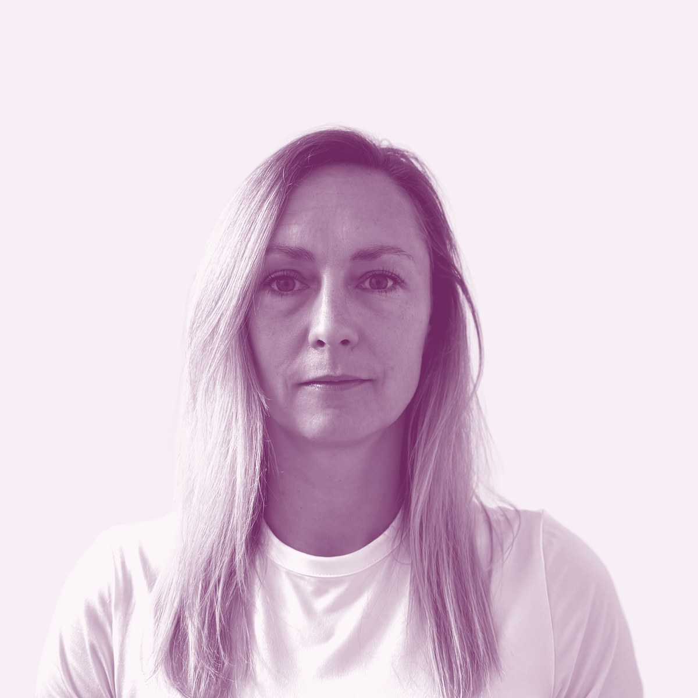

Creative Technologist
Pavla Havránková
UX/UI designérka s frontendovým backgroundem
Nový web je na cestě. Právě dolaďuju detaily. Zatím mě najdete tady:

Creative Technologist
UX/UI designérka s frontendovým backgroundem
Nový web je na cestě. Právě dolaďuju detaily. Zatím mě najdete tady: